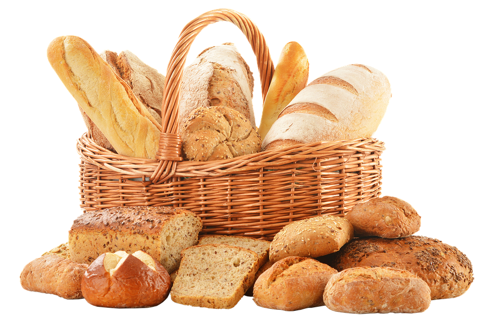
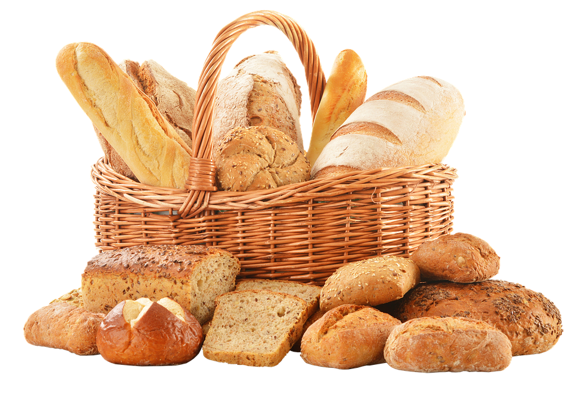
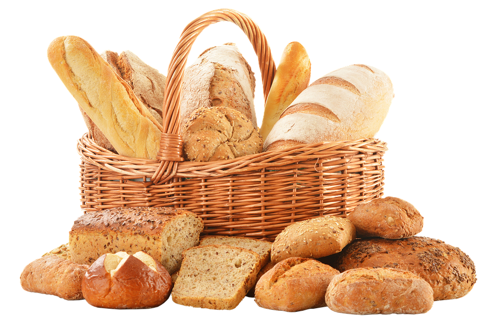
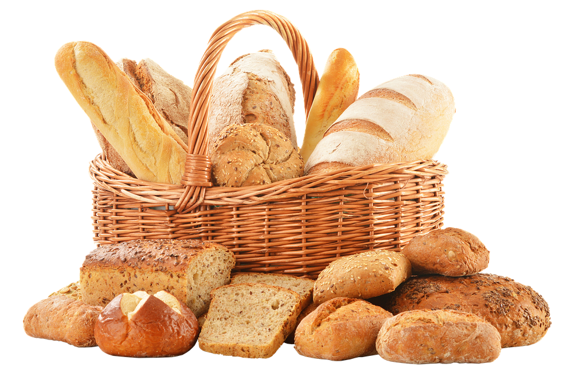

PANADERÍA

PANADERÍA MIGAS AMIGAS
 
PANADERÍA

PANADERÍA
Deléitate con Nuestras Empanadas Artesanales
En Nuestra Panadería, las empanadas son una auténtica tradición, una deliciosa fusión de sabores y texturas que nos enorgullece ofrecer. Nuestras empanadas son un tributo a la comida casera y a la pasión por la cocina, elaboradas con ingredientes frescos y un proceso artesanal.
Ingredientes de la Mayor Calidad
La excelencia de nuestras empanadas comienza con ingredientes de calidad. Utilizamos una mezcla de carne de res de primera, pollo tierno o verduras frescas, mezcladas con cebolla, pimientos y condimentos que dan vida a sabores auténticos y equilibrados. La masa, crujiente por fuera y suave por dentro, se elabora con harina de trigo, manteca y un toque de especias. Cada bocado es una explosión de sabor.
Sistema de Elaboración
Nuestro proceso de elaboración de las empanadas es una obra de arte en sí mismo. Comenzamos preparando el relleno con cuidado, cocinando a fuego lento hasta que los sabores se mezclen a la perfección. La masa se estira finamente y se rellena generosamente con la mezcla, antes de ser sellada a mano. Luego, horneamos cada empanada a la perfección, hasta que estén doradas y crujientes.
.png)
.png)
.png)
.png)
 Empanadas
Empanadas